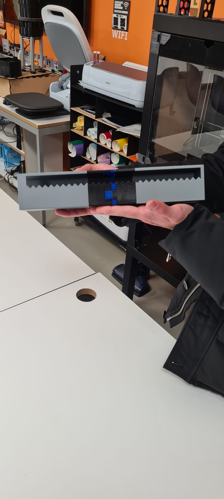
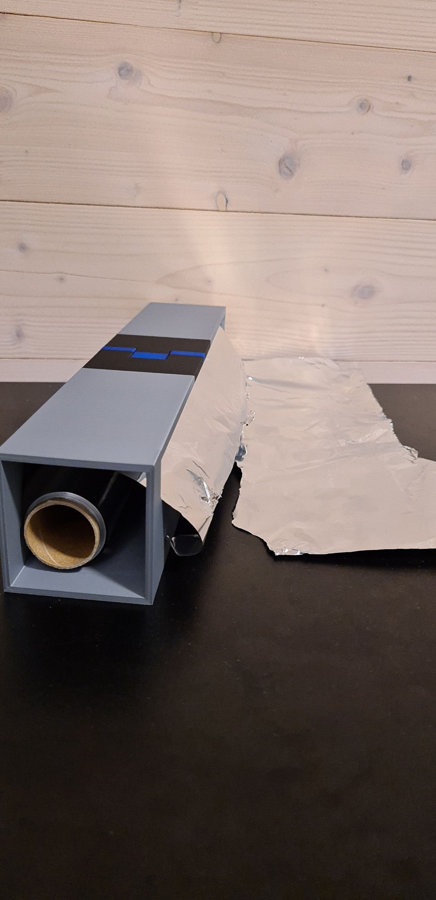
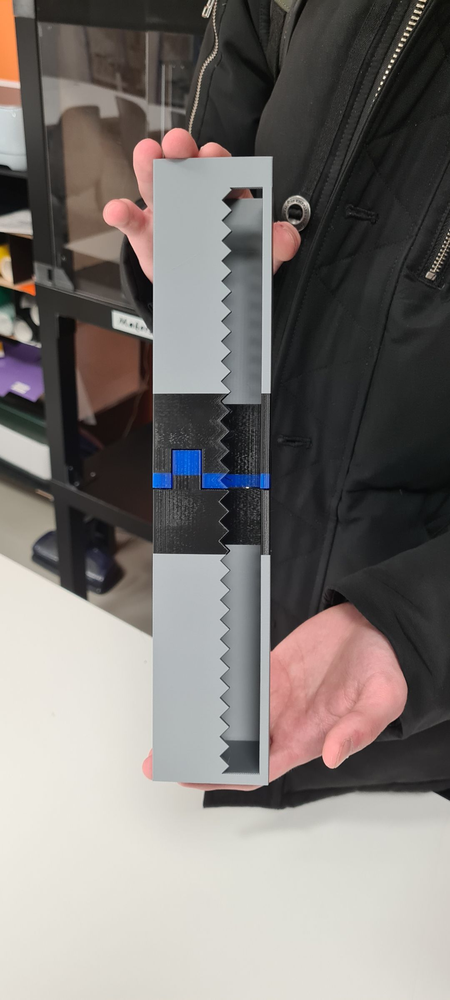
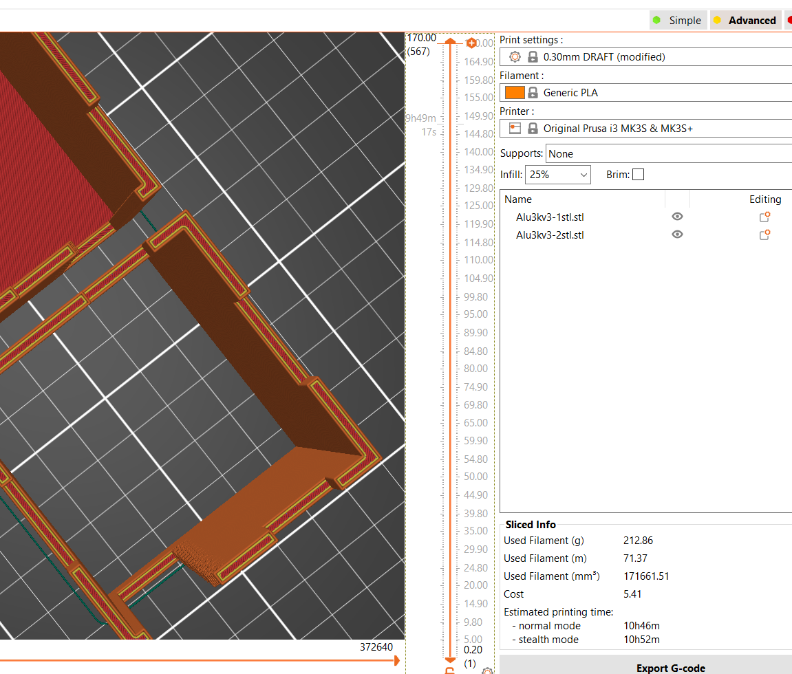
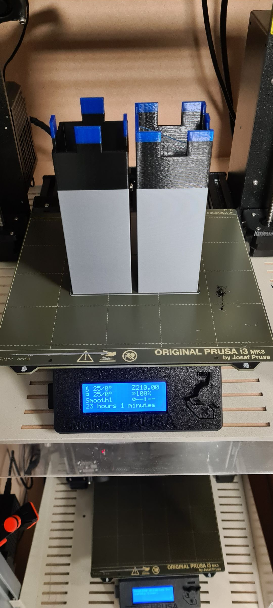

Khartoum, SD
Jeg heter Monzer Faisal. Er 21 år gammel og går på Informasjonssystemer. Jeg elsker å programmere,
å fikle med elektronikk, foto og video og andre digitale kreativetetsaktiviteter. Jeg har vært obsessed med PCer og tech fra jeg var 4 år gammel.
Da hadde jeg en gammel LG maskin som hadde både Michael Jackson og Shrek på seg. Hva mer trenger man da?
Men samtidig liker å komme meg vekk fra skjermen. Her ser du meg på toppen av en gammel afrikansk lastebil i Sudan som har mest sansynlig sett alt fra andre verdenskrig til Dronning Elisabeth
Kontakt info: monzerfm@hiof.no - Discord: Monzemann#4695
Alu 3000 - 3D printing deleksamen 1
Har du noen gang glemt å kjøpe aluminiumsfolie med kutter i kartongen eller ungådd den fordi det koster hele 14kr mer?
Nye Alu 3000 er løsningen min
PS: alle relaterte filer er under alu3k-3d-files i github repo-et.

Stegene:
- Lagde sketch i PS
- Målte dimensjonene til aluminiumrullen
- Lagde en rektangulær prisme som var hul og hadde tenner og var litt større enn folie boksen
- Oppdaget at den var for stor for 3D printeren så jeg itererte på første versjonen
- Delte formen i to
- Brukte move tool til å sette den kutte forme i riktig plass. Måtte i tillegg extrude den litt sånn at åpningen i boksen blir mindre..
- Brukte combine til å gjøre de til én form
- Brukte construction plane og split til å dele formen i 2 slik at den passer i 3d printeren. Fra dette punktet kan jeg egentlig 3d printe og lime de to delene, men jeg vil prøve å lage en joint. Da legger jeg til en rektangel som stikker lenger ut den ene kroppen og bruker combine til å gjøre den en del av den ene samtidig som jeg får automatisk et hull med samme form og størrelse på den ene kroppen!
Nå har jeg to kropper som kommer sammen som et puslespill!
- For å eksportere, gjør jeg først begge bodies til en component. Så går jeg på fil → 3d print → select og velger komponenten → refinement high for best kvalitet i meshformen → slå av send to 3d printer → ok og lagre filen der det passer meg. Den passet ikke
Versjon 2
- Reduserer joint høyde fra 70mm til 20 for å passe det inni 3d printeren
- Til slutt brukte jeg disse slicer instillingene:

- Valgte å printe om natta så den blir ferdig når jeg våkner. Jeg følgte med i en halv time just in case og det gikk fint, men under selve printingen ble det tomt for plast etter ca 8 timer, da måtte jeg bytte med en annen farge. Det manglet mye plast fordi alle har eksamen.
- Jeg lot den være i printeren og kom tilbake senere og oppdaget at den stoppet igjen for samme grunn, men denne gangen var det bare 20 min igjen. Det som er litt misledene er at "elapsed time" gikk fortsatt mens printen var pauset og ventet på plast, som er derfor det står 23 timer
